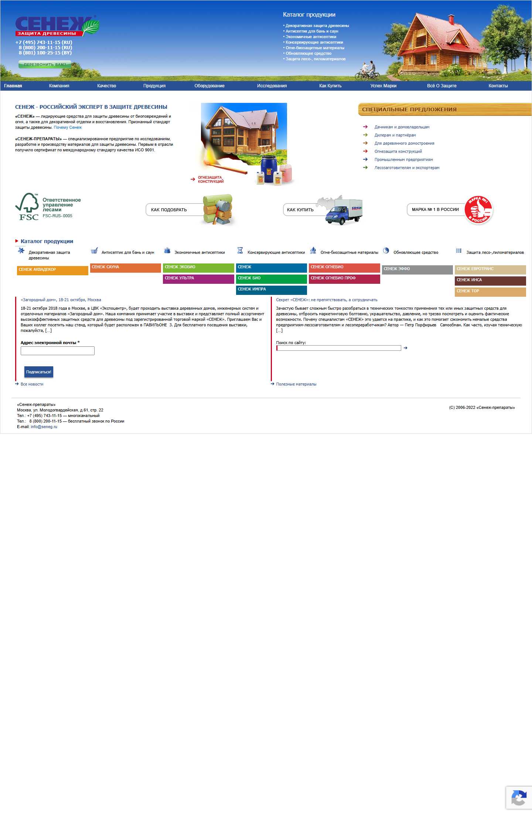
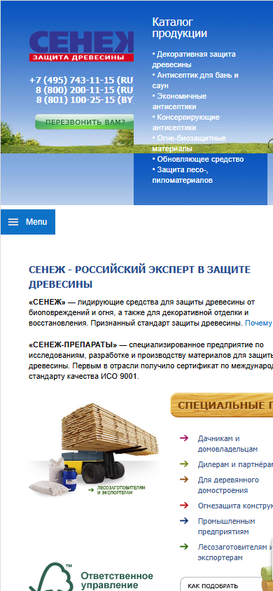
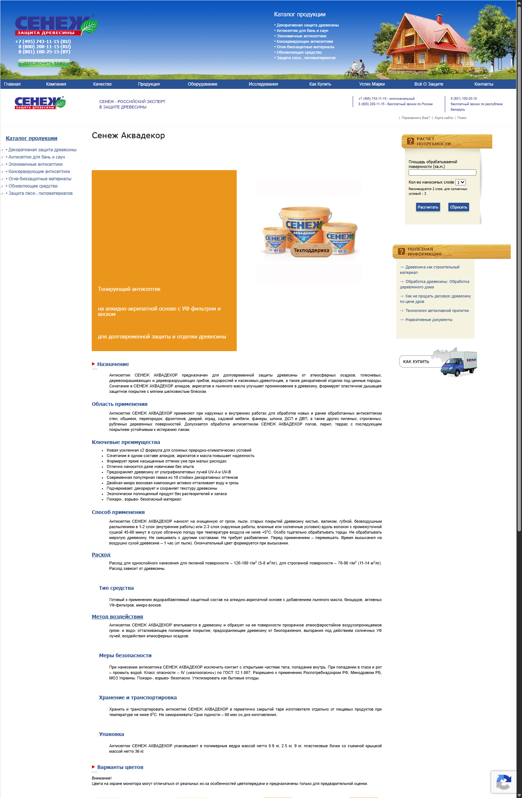
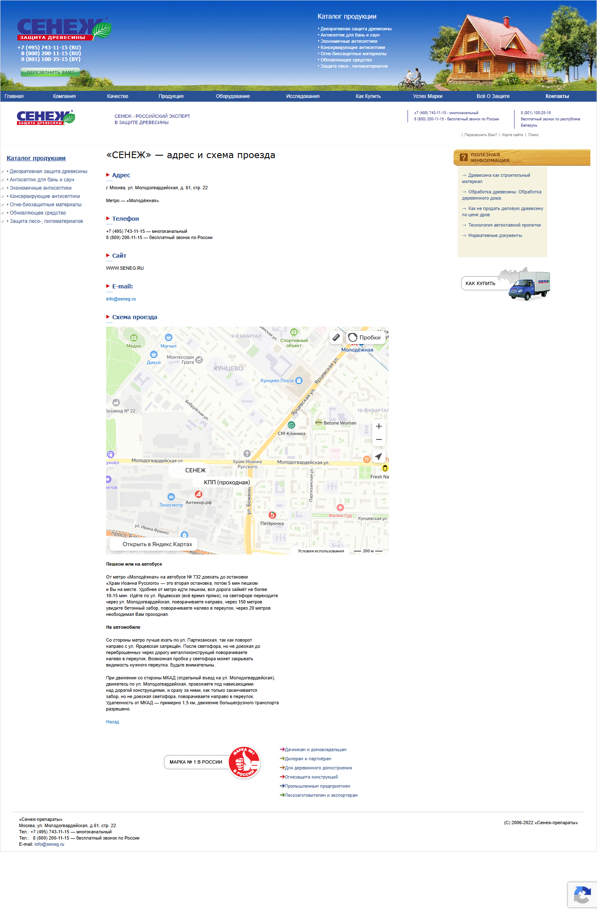

Сайт выглядит надежным, но тормозит первый шаг пользователя
Главная проблема не в ассортименте, а в перегруженной структуре, слабой мобильной подаче и лишнем трении на пути к заявке.
Итог в одном экране
Сильный ассортимент и базовое доверие уже есть, но текущая архитектура и визуальная подача заставляют пользователя разбираться в сайте вместо того, чтобы двигаться к покупке или заявке.
Мобильная версия ломает первый экран
На узком экране часть контента выглядит как десктопная раскладка, из-за чего падает читаемость и усложняется первый шаг.
Нет одного доминирующего CTA
Пользователь видит сразу несколько маршрутов, но не понимает, какой следующий шаг здесь главный.
Коммерческий путь размывается
На карточке товара много технической информации, но мало быстрых переходов к цене, дилеру или подбору объема.
Главная страница перегружает выбор

Что видно на скриншоте
- Телефоны, callback, меню, каталог, шорткаты и промоблоки конкурируют между собой.
- Ценность бренда считывается, но визуально проигрывает второстепенным элементам.
- CTA мелкий и не задает однозначный следующий шаг.
Риск: пользователь тратит внимание на навигацию по сайту, а не на движение в нужный сценарий.
Что делать: собрать hero вокруг одного сообщения, одного основного CTA и 1–2 вторичных маршрутов.
Мобильный экран — самая острая зона

Почему это критично
- Первый экран не адаптирован под современный узкий viewport.
- Ссылки и блоки выглядят плотными, а точки касания местами слишком мелкие.
- Пользователь получает ощущение старого и неудобного интерфейса уже в первые секунды.
Ожидаемый эффект после правки: ниже bounce rate, выше глубина просмотра и конверсия с мобильного трафика.
Карточка товара не доводит до покупки

Что теряется
- Есть сертификаты, описание и техподдержка, но нет короткого пути к цене или покупке.
- Пользователь не видит быстрый сценарий “где купить”, “узнать цену”, “подобрать объем”.
- По длинной странице CTA не повторяются достаточно системно.
Что делать: рядом с продуктом добавить коммерческий блок с несколькими понятными действиями, а CTA повторять после ключевых секций.
Формы, keyboard path и screen reader
- Серверная валидация форм работает и возвращает ошибки по обязательным полям.
- Антиспам и captcha активны: headless-отправки режутся как `spam` или уводятся в captcha-сценарий.
- У Contact Form 7 есть `aria-live`-области для сообщений о состоянии формы.
- У полей формы нет надежной связки `
- На главной нет явного `main` landmark.
- Триггер мобильного меню не имеет `aria-expanded`, `aria-controls` и роли кнопки.
- Часть декоративных изображений размечена слабо или шумно для screen reader.

Контраст
Большая часть ключевых синих и белых элементов проходит AA/AAA, но найден точечный провал: серый текст `#7b797b` на белом фоне = 4.32:1, что не проходит AA для обычного текста.
Это не катастрофа для всего сайта, но важный маркер того, что accessibility поддерживается не системно.
Сигналы устаревания снижают доверие
Новости и футер
На главной видны старые новости, а футер выглядит давно не обновленным. Это создает ощущение архивного сайта.
Старые паттерны UI
Градиенты, плашки, разрозненные иконки и плотная структура делают сайт визуально устаревшим, даже если бренд сам по себе силен.
Контакты и техподтверждения
Адрес, телефоны, карта, документы и технический контент все еще поддерживают базовую уверенность в компании.
Приоритеты исправлений
Пересобрать mobile layout
Главная и ключевые шаблоны должны нормально работать на мобильном в первом касании.
Пересобрать hero и CTA hierarchy
Один доминирующий сценарий на главной, меньше конкурирующих блоков, яснее ценность бренда.
Сократить формы первого контакта
Оставить 2–3 поля на старте и убрать лишнее трение для холодного лида.
Усилить путь покупки на product page
Добавить блоки “где купить”, “узнать цену”, “подобрать объем”, “скачать инструкцию”.
Закрыть accessibility-базу
Явные label/input связи, `main`, нормальный триггер мобильного меню, декоративные `alt=""`.
Обновить сигналы свежести
Футер, новости, кейсы и общий визуальный слой стоит привести к текущему состоянию бренда.
Что даст наибольший эффект
Топ-3 действия
- Починить мобильный first screen и плотность интерфейса.
- Собрать главную вокруг одного сильного CTA и более чистой иерархии.
- Сделать товарные страницы коммерчески завершенными, а не только информационными.
Ожидаемый результат
- Меньше потерь на мобильном трафике.
- Более понятный первый шаг для нового пользователя.
- Выше шанс перевести интерес в заявку, звонок или запрос цены.
Сопроводительные материалы
Полный текст аудита, доказательная база и отдельный блок по формам/accessibility лежат рядом с этой HTML-презентацией. Этот файл можно показывать как самостоятельную демо-страницу в браузере.
Навигация: кнопки ниже, hash-ссылки на слайды и клавиши ← → на клавиатуре.